Exploring Replicability in Biostatistics
Replicability Crisis in Science?
![]()
18-22 September 2023
Setup R
Packages
Loading Data
Replicability in Biostatistics
Replicability in Biostatistics
- In Biostatistics is common to have a similar experimental setup (i.e., same genes and variables), repeated across multiple studies. Replicability in this framework refer to how consistent is a variable (e.g., gene expression) in predicting a certain outcome across different dataset.
- Recent research suggest the importance of cross-study training of prediction models to improve the overall predictive performance and replicability (Masoero et al., 2023; Parmigiani, 2023; Patil & Parmigiani, 2018)
- We will try to assess how a certain variable consistently (or not) predict a certain outcome using a binary classification and meta-analytic approach
Background
Background
For this lecture we will use:
- Gene expression data
- Analysis of contingency tables
- Binary classifiers
- Receiver Operating Characteristic (ROC) curves
- The Youden index to analyze ROC curves
Genes expression data
We are going to use the curatedOvarianData dataset (see Waldron et al., 2014 for details). Ganzfried (2013) provide a detailed description of the dataset structure.
Data structure
Gene Expression data are very complex in terms of acquisition, pre-processing and organization. For the purpose of this workshop we will transform the gene-phenotype database in a standard 2d dataframe using the get_bio_data() function. The majority of packages that we are going to use works better with this data structure.
get_bio_data <- function(data, gene, phenotype){
phend <- data.frame(Biobase::pData(data)[, phenotype])
gened <- data.frame(Biobase::exprs(data)[gene, ])
if(length(gene) != 1){
gened <- data.frame(t(gened))
}
out <- cbind(phend, gened)
colnames(out) <- c(phenotype, gene)
rownames(out) <- NULL
return(out)
}Data structure
All the datasets are available using the data(dataset, package = "curatedOvarianData"). To see a list of available datasets (when the package is loaded using library() the package = argument can be omitted):
[1] "E.MTAB.386_eset" "GSE12418_eset"
[3] "GSE12470_eset" "GSE13876_eset"
[5] "GSE14764_eset" "GSE17260_eset"
[7] "GSE18520_eset" "GSE19829.GPL570_eset"
[9] "GSE19829.GPL8300_eset" "GSE20565_eset"
[11] "GSE2109_eset" "GSE26193_eset"
[13] "GSE26712_eset" "GSE30009_eset"
[15] "GSE30161_eset" "GSE32062.GPL6480_eset"
[17] "GSE32063_eset" "GSE44104_eset"
[19] "GSE49997_eset" "GSE51088_eset"
[21] "GSE6008_eset" "GSE6822_eset"
[23] "GSE8842_eset" "GSE9891_eset"
[25] "PMID15897565_eset" "PMID17290060_eset"
[27] "PMID19318476_eset" "TCGA.RNASeqV2_eset"
[29] "TCGA.mirna.8x15kv2_eset" "TCGA_eset" Data structure
For example, we want to extract the ARHGAP5 and ZNF487 genes and debulking and tumorstage phenotype variables.
data(GSE32063_eset) # load the dataset
get_bio_data(GSE32063_eset, c("ARHGAP5", "ZNF487"), c("debulking", "tumorstage")) debulking tumorstage ARHGAP5 ZNF487
1 suboptimal 3 -1.3788404 -1.4693060
2 optimal 3 -0.7029762 -2.1866198
3 suboptimal 3 -1.1906614 -1.5242004
4 suboptimal 3 -1.5408096 -1.9636803
5 suboptimal 3 -1.8204670 -1.6253910
6 optimal 3 -0.1023159 -0.9768720
7 suboptimal 4 -1.4978333 -2.8806515
8 optimal 4 -0.3169098 -0.9902863
9 optimal 3 -0.9621868 -1.2781801
10 suboptimal 3 -2.6246548 -2.3127084
11 suboptimal 3 -1.1208530 -1.3294687
12 suboptimal 3 -1.6579170 -3.5191045
13 suboptimal 4 -1.7063255 -1.0643783
14 optimal 3 -1.2869992 -1.2185640
15 suboptimal 3 -2.5078154 -1.6630969
16 suboptimal 4 -1.0130329 -1.6677127
17 suboptimal 3 -2.3309345 -2.7753735
18 suboptimal 3 -2.4601330 -1.0582757
19 optimal 3 -1.7182579 -1.4094768
20 optimal 3 -1.3721395 -1.7538829
21 optimal 4 -1.0870414 -1.6791105
22 optimal 3 -0.7623720 -1.4829173
23 suboptimal 3 -1.1356659 -2.1259017
24 optimal 3 -1.3679762 -0.1064415
25 suboptimal 4 -1.1441503 -2.5149746
26 optimal 3 -1.8230276 -0.3728800
27 suboptimal 3 -1.2220440 -2.3130960
28 optimal 3 -0.7620802 -1.6277437
29 optimal 3 -0.1756640 -1.4368038
30 suboptimal 3 -0.3513031 -1.5798197
31 optimal 3 -1.1255894 -1.3647880
32 optimal 3 -1.2265711 -1.5709486
33 optimal 3 0.4664946 -1.0424862
34 suboptimal 4 -1.8461108 -2.3798810
35 optimal 3 -1.7979369 -0.7189474
36 suboptimal 3 -1.6521063 -1.7661219
37 optimal 3 -2.3519936 -0.6084919
38 optimal 3 -2.1397367 -0.6968164
39 suboptimal 4 -1.6583776 -2.9544182
40 suboptimal 4 -1.6778574 -3.0424485Data structure
We performed a little bit of pre-processing to have a more clean and minimal dataset. The pre-processing are described into the 03-biostatistics/scripts/gene-data-preprocessing.R:
library(curatedOvarianData)
devtools::load_all()
listdata <- data(package = "curatedOvarianData")$results[, "Item"]
datl <- lapply(listdata, getdata, package = "curatedOvarianData")
names(datl) <- listdata
# we need the debulking as phenotype, lets see which data have it
has_debulking <- sapply(datl, function(d) any(!is.na(pData(d)[, "debulking"])))
datl_debulking <- datl[has_debulking]
# let's see how many NAs and remove the dataset with an high percentage
pNA <- sapply(datl_debulking, function(x) mean(is.na(pData(x)[, "debulking"])))
ncases <- sapply(datl_debulking, function(x) length(pData(x)[, "debulking"]))
missing <- data.frame(pNA, ncases)
# remove dataset with more than 20% of NA on debulking
datl_debulking <- datl_debulking[pNA < 0.2]
# let's explore the genes, we keep the genes that are in common with all
# datasets. One dataset the "TCGA.mirna.8x15kv2_eset" dataset has some genes that are
# completely different from the others, we remove it.
# get_gene_names(datl_debulking$TCGA.mirna.8x15kv2_eset)
datl_debulking <- datl_debulking[names(datl_debulking) != "TCGA.mirna.8x15kv2_eset"]
# now we intersect all the gene names to keep only the common ones
genes <- lapply(datl_debulking, get_gene_names)
common_genes <- base::Reduce(base::intersect, genes)
# converting into dataframe with selected
ovarianclean <- lapply(datl_debulking, get_bio_data, common_genes, "debulking")
# saving
saveRDS(ovarianclean, "03-biostatistics/objects/ovarianclean.rds")Data structure
The pre-processing create a dataframe with datasets having both the debulking variable and all genes in common. In this way we can analyze and compare genes among all datasets.
List of 15
$ E.MTAB.386_eset :'data.frame': 129 obs. of 220 variables:
$ GSE12418_eset :'data.frame': 54 obs. of 220 variables:
$ GSE17260_eset :'data.frame': 110 obs. of 220 variables:
$ GSE26712_eset :'data.frame': 195 obs. of 220 variables:
$ GSE30009_eset :'data.frame': 103 obs. of 220 variables:
$ GSE30161_eset :'data.frame': 58 obs. of 220 variables:
$ GSE32062.GPL6480_eset:'data.frame': 260 obs. of 220 variables:
$ GSE32063_eset :'data.frame': 40 obs. of 220 variables:
$ GSE49997_eset :'data.frame': 204 obs. of 220 variables:
$ GSE9891_eset :'data.frame': 285 obs. of 220 variables:
$ PMID15897565_eset :'data.frame': 63 obs. of 220 variables:
$ PMID17290060_eset :'data.frame': 117 obs. of 220 variables:
$ PMID19318476_eset :'data.frame': 42 obs. of 220 variables:
$ TCGA.RNASeqV2_eset :'data.frame': 261 obs. of 220 variables:
$ TCGA_eset :'data.frame': 578 obs. of 220 variables:Data structure
I prefer always working (if possible) with a simple dataframe:
dataset debulking ABCA1 ABCA2 ABCA3 ABCA4 ABCA5
1 E.MTAB.386_eset suboptimal 10.839395 6.845599 8.962037 7.735899 6.911055
2 E.MTAB.386_eset optimal 11.227465 7.522329 8.647420 7.257863 7.157317
3 E.MTAB.386_eset optimal 11.375979 7.195961 8.124816 8.797894 7.076414
4 E.MTAB.386_eset optimal 9.716625 8.253187 7.494501 7.685826 6.926470
5 E.MTAB.386_eset suboptimal 11.647426 8.300361 7.816192 7.241782 7.062383
6 E.MTAB.386_eset optimal 10.291002 7.487264 7.788690 9.890838 7.227646
ABCA8 ABCB1 ABCB4 ABCB7 ABCB9 ABCC1 ABCC10 ABCC4
1 8.880053 7.742924 6.858119 10.26362 7.233300 12.47511 10.621616 7.867795
2 6.705939 7.290139 6.896026 11.16421 8.294693 10.96171 9.283463 7.702067
3 7.542021 7.331410 6.729391 10.86380 7.547010 10.20072 8.884857 7.847243
4 7.827795 6.655951 6.708140 11.70487 8.637981 12.33818 9.458241 8.074573
5 6.796258 7.791991 7.488330 11.05764 8.941183 12.19990 9.561413 7.654644
6 7.586522 7.248623 6.837272 11.19498 7.516927 10.58948 9.032422 8.400274
ABCC5 ABCC8 ABCD2 ABCD3 ABCE1 ABCF2 ABCF3 ABCG1
1 8.971456 10.368624 6.569425 6.864870 8.765213 8.405781 8.355384 12.119868
2 8.924245 7.882769 7.349124 7.035186 9.480066 9.613636 8.567225 9.533904
3 9.317958 7.240344 6.650674 6.865343 8.716176 9.322715 7.889017 9.246897
4 8.532776 10.257129 6.611022 6.761457 9.122343 9.282883 8.822519 11.375979
5 9.674851 11.258042 6.614314 6.744717 8.964149 6.764569 7.975910 12.136104
6 9.402390 7.345348 6.610154 6.916254 9.292160 9.316871 9.647487 8.672094
ABCG4 ANXA1 ANXA4 APAF1 APC APEX1 APEX2 APOE
1 12.644486 7.758441 6.780904 9.429752 6.659251 11.26058 9.964905 12.939256
2 8.937479 6.759182 6.843355 9.716625 6.541244 11.38137 10.379333 13.526659
3 9.032422 7.987442 6.792590 9.872901 6.756587 11.98111 10.470689 9.321591
4 11.081676 7.457984 6.699457 9.522337 6.649057 13.52122 10.019142 10.797752
5 12.316793 7.373193 6.873905 10.242153 6.733338 11.53132 10.459047 12.321970
6 9.468645 7.578365 6.858501 10.613006 6.718292 11.48385 9.947725 11.479465
AQP9 ASAH1 ATM ATOX1 ATP7B ATR AURKA BAD
1 6.896667 8.013413 8.991016 11.86723 10.99604 8.824009 9.089473 10.026779
2 7.300790 9.384410 9.218706 11.00517 10.42616 8.869149 9.643404 9.368393
3 6.929544 8.434568 8.650290 11.14605 10.19583 9.292160 9.564038 9.157618
4 6.754185 7.994920 9.151488 10.36164 11.95049 9.364890 9.245179 9.277187
5 7.190891 8.338853 8.413892 10.79890 11.53551 8.646506 9.464309 10.649963
6 7.029738 7.757668 9.661314 10.79775 10.76656 9.455848 9.622132 9.286238
BAG1 BAG3 BAX BCL2 BCL2A1 BCL2L1 BCR BID
1 8.247202 8.196225 8.285454 7.061771 6.749110 11.52845 7.478098 8.776066
2 8.696358 8.902348 8.527747 6.923657 6.893357 11.52132 8.600347 8.610633
3 9.137049 10.419071 9.042224 6.782296 6.982602 10.94320 7.660845 8.412206
4 9.052640 9.072504 8.199018 6.960116 6.872465 11.60881 8.420708 7.888162
5 8.499520 10.096657 9.192863 7.054737 6.924474 11.37976 9.646834 9.267554
6 8.357150 10.060701 8.185528 6.969883 6.895864 12.05709 7.877872 8.481050
BIRC2 BIRC3 BIRC5 BRCA1 BRCA2 CASP3 CASP8 CASP9
1 9.588253 9.120734 8.104391 8.229637 7.606711 8.156865 8.899888 11.856829
2 9.908033 9.838902 7.612666 8.216154 8.249681 7.886652 9.397077 10.377508
3 8.713247 6.861837 7.233072 7.599784 7.478098 8.722548 8.633693 9.513663
4 9.252486 7.334627 8.222438 7.773172 7.825928 7.643726 9.040616 11.105953
5 9.871594 8.805367 6.848384 8.257817 7.295718 8.485559 9.228429 11.620631
6 10.172727 7.896412 7.633207 7.800559 8.152128 7.938922 9.057885 9.975805
CCL2 CCND1 CCNE1 CCNH CCT8 CDC40 CDH1 CDK2
1 8.485123 11.237506 7.789426 7.731906 10.66772 9.406706 6.781030 8.861773
2 9.227227 9.940672 8.954642 8.516610 11.26844 10.115095 6.794842 9.412149
3 9.323911 12.750957 8.534080 8.614546 10.77727 9.068780 6.984990 10.132387
4 7.998110 11.441090 8.038295 8.325207 11.28383 8.745830 6.838876 9.477643
5 9.119603 13.649187 9.980143 8.056253 11.00517 9.106713 6.880984 7.992254
6 9.852250 12.280211 10.960413 8.103981 11.21451 9.455284 6.841160 9.530001
CDK4 CDKN1A CDKN1B CDKN2A CFL1 CFLAR CFTR CHEK1
1 10.98201 11.42440 9.383292 7.320087 12.47236 12.02346 6.684829 7.048884
2 10.74663 11.07151 8.996853 8.965756 13.08190 12.51807 6.822915 6.693706
3 11.81952 12.13184 8.620351 7.790862 12.68359 11.99563 6.693981 6.751534
4 10.64447 12.79570 8.049906 7.557507 11.58685 13.04655 6.704771 6.682156
5 10.17820 11.98798 9.213098 6.933126 12.35253 11.90179 6.719023 6.860076
6 10.21128 10.97491 9.271118 10.297463 12.31679 11.90704 6.740824 6.657458
CIAPIN1 CLDN1 CLDN16 CLDN5 CLDN7 CLU COX7A2 CTNNB1
1 7.681508 8.708947 7.845268 9.297974 8.338058 7.100871 12.08316 11.56230
2 7.534961 7.926664 7.281107 8.984927 9.550085 6.669287 12.33584 10.68571
3 8.174967 10.655983 11.076369 7.789044 8.605269 7.338735 11.77432 10.93122
4 7.324561 7.969987 10.187592 9.341966 10.588528 7.554864 12.35253 11.40614
5 7.367011 9.324963 10.416467 9.805089 8.059932 7.586933 10.81128 10.55741
6 7.943628 10.406669 12.253335 9.032984 9.119125 6.682610 12.14235 11.60459
CYP2B6 CYP2E1 CYP3A4 CYP3A5 DAPK1 DIABLO E2F1 ERBB2
1 7.226860 11.208238 7.734879 6.759182 7.743586 7.424097 7.553361 7.041597
2 7.101800 8.818492 6.606713 7.273960 8.114309 7.736911 9.366599 7.205736
3 6.704883 9.964152 6.633858 6.770068 7.653972 7.709740 7.949149 7.114339
4 6.689213 10.409367 7.027562 7.035601 8.003611 7.678017 7.629158 7.266241
5 6.695742 11.135486 7.115536 6.920464 7.242014 7.347626 8.484248 7.181896
6 6.723709 8.753469 6.602698 6.723458 7.093027 7.551000 9.007671 7.527508
ERCC1 ERCC2 ERCC3 ERCC5 ERCC8 ETS1 F3 FADD
1 8.119690 6.634948 7.798293 8.375592 9.138738 9.317442 6.497447 8.554351
2 8.512343 8.204595 8.122248 9.597599 9.309278 9.440621 6.744717 8.687447
3 7.454531 7.234607 8.413416 8.782179 9.783796 8.162965 6.800483 9.209239
4 8.102303 7.108459 7.795757 8.744821 9.246290 8.114309 6.658022 8.613511
5 8.014282 6.605423 7.433361 8.567225 10.437541 8.871729 6.836299 9.524010
6 8.224209 7.625147 7.892648 8.870164 9.678867 7.993830 6.712306 8.824009
FAS FASLG FN1 FOS GART GJA1 GLO1 GPX2
1 6.661529 6.964673 13.84285 11.834893 9.58040 9.958993 8.524575 6.909208
2 6.940935 7.224190 13.12844 9.774165 10.96740 8.066872 9.729713 6.795481
3 6.856376 6.805081 11.58972 11.241464 10.35577 7.872872 9.562123 6.698990
4 6.769281 6.722381 10.45366 8.293316 11.43317 8.384023 8.875251 6.733681
5 6.778335 7.051708 14.24558 11.396325 10.39101 9.211440 8.911571 6.589032
6 6.959689 7.004315 13.98307 10.381797 10.73191 8.489960 9.608504 6.669961
GPX4 GSK3B GSR GSS GSTA4 GSTK1 GSTM3 GSTM4
1 6.813452 12.15442 8.398504 8.961541 6.943554 10.32362 10.100971 9.568280
2 7.868558 12.43114 11.220488 7.614796 6.670250 10.43400 8.403353 10.132387
3 7.352592 12.69534 9.704405 7.509262 7.089369 10.72160 9.037159 9.091691
4 7.030146 12.76982 9.733084 8.431504 6.984135 10.82619 8.544503 9.750934
5 7.345952 12.18104 9.412149 8.516610 6.981129 10.28949 9.088984 9.044935
6 7.666169 12.71081 10.075754 8.083219 7.002652 10.01606 9.093766 9.511245
GSTM5 GSTO1 GSTP1 GSTT1 GSTZ1 HAGH HIF1A HSPH1
1 10.306293 8.606291 11.78586 8.416559 7.291539 9.289830 9.491030 9.783796
2 7.872448 9.581561 12.37797 8.778741 7.521389 8.889739 10.110454 10.282395
3 6.983758 7.819526 11.39633 9.023617 7.188044 9.795539 10.382583 10.087814
4 8.406175 8.135362 11.26994 9.001613 7.692207 10.280731 9.825716 9.560779
5 10.084094 9.031920 12.57920 8.777632 7.675928 9.376039 9.642701 9.141591
6 7.612992 8.526893 11.79920 9.071992 7.034782 9.344247 10.097440 9.936790
IGF1R IL6 INSR ITGAE KCNMA1 KIT KLF1 LBR
1 6.838876 9.086239 6.800426 7.491948 10.257129 8.975076 6.889729 9.613636
2 6.875127 7.356368 6.702848 7.887034 10.926863 7.326361 6.814125 10.578780
3 7.079108 8.579867 6.759050 8.322547 10.579718 7.096939 6.974354 10.835462
4 6.957563 7.241782 6.629429 8.319912 9.944868 8.286431 6.864716 9.486122
5 6.942007 6.601503 6.822207 6.708006 10.454517 8.897156 6.877372 7.866780
6 7.103209 7.701416 6.772228 7.881255 10.433997 6.945788 6.852500 10.998302
LIG4 MAP2K1 MAPK3 MAPK8 MCL1 MDM2 MGMT MKI67
1 7.212709 8.125232 12.160799 6.760280 6.823211 8.373721 8.816099 12.49164
2 7.592506 8.994710 11.779350 6.830487 6.947933 8.272301 11.581831 11.50976
3 7.749951 8.815611 10.489889 6.821279 6.878306 8.728776 10.545614 10.84681
4 8.060331 7.805088 11.525632 6.725328 6.745341 8.798323 10.435745 12.43114
5 7.500034 7.733790 11.825978 6.955973 6.808960 7.974306 11.326666 12.91702
6 8.157733 8.143069 9.615703 6.871519 6.804433 7.806968 11.261863 12.13857
MLH1 MLH3 MMP2 MMP9 MNAT1 MRE11A MSH2 MSH3
1 9.572425 9.998742 6.702731 12.978979 7.803568 8.340568 6.980159 8.336425
2 9.386016 7.746810 7.630609 13.738296 7.877496 8.130434 6.932767 8.808049
3 8.983380 8.972458 7.756945 8.245050 8.770694 8.189652 7.287554 9.067189
4 9.197284 9.209753 7.144451 8.381403 9.090058 8.187218 7.071250 8.776066
5 9.587072 9.540095 9.694220 12.311452 8.386363 7.600436 7.044314 7.894203
6 8.377317 8.089658 8.114692 11.661257 8.863229 8.192236 7.272901 8.648388
MSH6 MUTYH MVP MYC NFKB1 NFKBIA NR1H3 NR1H4
1 11.48785 8.441406 10.160548 10.863801 7.806222 14.01653 12.28710 6.753944
2 10.43314 8.087351 10.192472 12.136104 8.253187 14.30214 12.88488 6.766869
3 12.30680 8.106060 9.545129 9.928011 8.214850 14.30214 11.06684 6.848135
4 11.06815 8.009482 10.208878 10.804036 7.478761 13.64919 12.25334 6.778560
5 10.48989 8.059121 10.472425 10.493515 7.868558 14.02920 11.92540 6.942543
6 11.07922 7.855445 10.219166 10.781571 7.812260 13.91213 11.68122 6.824061
NR1I3 NTRK2 PARP2 PDGFRB PDK1 PIK3CA POLB POLI
1 7.164879 6.841160 8.358902 9.370726 6.903371 9.108833 11.120641 7.539652
2 6.812951 7.271305 7.477164 9.034046 7.127309 9.201932 9.964905 8.288179
3 6.798531 8.358488 8.145587 10.246274 7.256301 9.506519 10.098987 8.123014
4 6.888614 7.348783 9.838368 8.617009 6.903549 9.316871 9.659823 8.731196
5 7.389878 6.763306 7.256041 9.977210 6.993913 9.168068 10.835462 8.108127
6 6.742970 7.317526 7.720117 9.911881 7.013408 9.879251 10.386700 7.974730
PSMA3 RAD1 RAD23A RAD23B RAD50 RAD51 RAF1 RB1
1 6.782166 13.030370 9.618876 8.843967 7.413681 7.440083 8.593359 8.702936
2 6.980542 10.503795 10.471470 9.246897 7.798293 6.702731 8.830427 8.617009
3 6.725328 8.564961 8.915122 9.076945 7.891816 6.926470 8.020952 9.674851
4 6.814259 12.015844 10.162910 9.877929 7.947961 7.935052 8.021755 8.412991
5 6.648600 12.268708 9.144911 8.536796 7.971156 8.088937 8.568614 7.822239
6 6.798531 8.672581 10.081694 8.153357 8.079344 6.611246 7.718002 8.936396
RPL36 SGPP1 SIRT1 SIRT2 SIRT4 SIRT5 SLC10A1 SLC15A2
1 10.354919 6.917069 7.129892 7.144451 6.894916 10.97857 8.833532 7.010702
2 11.276217 7.143976 7.207968 6.662145 7.068340 10.12467 7.207738 7.099184
3 10.143224 7.205455 7.987801 6.566324 6.788607 10.98315 6.965629 7.292587
4 9.923729 6.753404 7.203537 6.982027 6.874808 11.09773 7.741941 7.080201
5 10.808039 7.116433 7.396476 6.953287 6.786749 10.89773 8.283368 7.082766
6 10.983148 6.921313 7.981465 7.454183 7.466898 11.31854 6.951303 7.343303
SLC16A2 SLC16A3 SLC19A1 SLC19A2 SLC19A3 SLC1A4 SLC1A5 SLC22A1
1 7.935776 7.073882 8.302609 6.608728 10.319222 7.593181 6.722895 6.853897
2 7.306276 7.687788 8.035930 6.973975 11.249055 7.813252 6.843828 6.900822
3 8.088129 7.034543 7.397024 6.673266 10.179876 7.754429 6.794206 6.889729
4 7.656052 6.853179 8.308380 6.664070 8.808519 7.536985 6.837693 6.776230
5 7.268498 7.590332 9.109394 6.946268 12.026946 7.789426 6.767923 6.881709
6 7.061949 7.471210 8.479222 6.851816 10.216842 7.261172 6.847398 6.992752
SLC28A1 SLC29A1 SLC29A2 SLC2A5 SLC31A1 SLC7A1 SLC7A10 SLC7A11
1 6.674104 10.014521 9.864982 9.048300 7.571797 8.920121 6.829303 7.247272
2 6.662544 9.981688 10.072713 9.798107 8.382291 9.969333 6.999004 6.633858
3 6.592974 9.491030 9.182233 7.686160 8.104815 9.705134 7.536985 7.488330
4 6.483127 9.713148 9.538248 7.253627 8.433297 8.508646 7.093263 7.495513
5 6.723320 9.668169 9.159178 10.168625 7.899521 9.433523 6.904507 6.656101
6 6.672712 9.431107 9.219328 8.476463 8.217021 10.246274 9.037159 7.903030
SLC7A2 SLC7A5 SLC7A8 SLC9A3R2 SLCO4A1 SP1 SRC STAT1
1 7.079565 9.537659 9.178516 9.574976 6.934997 8.724469 11.78092 14.12329
2 7.195008 11.765885 8.660329 8.738353 9.133377 8.947775 11.09672 13.52122
3 7.195264 10.746632 8.184732 8.696358 8.134120 9.789807 10.89362 12.96082
4 7.653623 11.041209 8.868709 9.726282 7.297339 8.790778 11.42155 13.23216
5 7.182167 10.971551 9.391325 8.800765 9.034046 7.951562 11.24649 13.50068
6 6.940789 10.242153 7.481978 9.236139 7.334928 8.708947 11.30645 13.22267
STAT3 STAT5A STAT5B TGFA TIMP1 TMEM109 TNFSF10 TOP1
1 10.38670 7.598387 7.370609 8.495975 12.94263 9.197852 7.350274 11.14493
2 11.44832 8.313083 8.451724 8.204998 13.42744 9.917066 7.985511 11.41880
3 10.81887 7.558533 8.701540 8.289002 14.44965 10.019861 6.702332 10.86906
4 10.79106 7.047179 7.844877 8.158572 13.50068 9.005625 6.777934 11.42440
5 10.72573 7.079323 7.921993 8.539952 14.22980 9.499840 7.336431 10.64622
6 11.00185 7.527831 8.021755 8.726781 13.11178 8.997311 8.475478 11.28510
TOP2A TOP2B TP53 TP53BP2 TP73 TRADD TRAF1 XPA
1 8.878214 10.313158 8.253187 10.893620 6.604516 10.627634 6.891011 6.557723
2 11.318544 10.403172 8.157733 10.405792 6.713857 11.563815 7.017953 6.634579
3 10.001815 9.987692 7.967948 10.090610 7.120558 9.583350 6.979454 6.644534
4 10.606993 10.428813 10.618854 10.079322 7.011689 9.879251 7.062134 6.713586
5 10.291002 9.870044 7.643020 9.946294 6.582531 11.636604 6.971541 6.680946
6 10.660817 10.509485 9.061171 11.044895 6.722895 10.745602 7.272121 6.692519
XPC XRCC1 XRCC2 XRCC3 XRCC4 XRCC5
1 11.46091 8.462342 6.820206 7.406896 6.749753 13.09007
2 10.57020 9.047179 7.347931 8.022978 7.009499 12.53423
3 10.79775 7.874741 7.123481 7.499060 6.685486 14.11107
4 11.44710 8.113415 6.991716 8.012213 6.775875 13.57871
5 11.33618 8.468848 6.863026 7.687788 6.880655 12.97898
6 10.24550 8.257817 7.140145 7.470006 6.844277 13.44681Contingency tables (CT)
CTs are tables that summarize 2 or more categorical variables using absolute or relative frequencies.

Contingency tables (CT)
| x | y | Total | |
| 1 | 0 | ||
| 1 | 32 21.3 % |
40 26.7 % |
72 48 % |
| 0 | 47 31.3 % |
31 20.7 % |
78 52 % |
| Total | 79 52.7 % |
71 47.3 % |
150 100 % |
Contingency tables (CT)
Regardless of the content, contingency tables can be expressed with a common nomenclature.
Truth
|
|||
|---|---|---|---|
1
|
0
|
||
| Prediction | 1 | True Positive (TP) | False Positive (FP) |
| 0 | False Negative (FN) | True Negative (TN) | |
Contingency tables (CT)
There are a lot of metrics that can be calculated from a simple contingency tables:
Contingency tables (CT) metrics
The most important (and used) measures are:
- the Sensitivity (aka True Positive Rate TPR or recall) is \(\frac{TP}{(TP + FN)}\)
- the Specificity (aka True Negative Rate TNR) is \(\frac{TN}{(FP + TN)}\)
- the Accuracy is \(\frac{(TP + TN)}{(TP + TN + FP + FN)}\)
- the Positive Predictive Value is \(\frac{TP}{TP + FP}\) or \(\frac{TPR \times \rho}{TPR \times \rho + (1 - TPR) \times (1 - \rho)}\) where \(\rho\) is the prevalence i.e. \(TP + FP\)
- Area Under the Curve (AUC) is the area under the ROC curve that represent classification performance
Contingency tables (CT) metrics
|
Truth
|
||||
|---|---|---|---|---|
|
1
|
0
|
|||
| Test | 1 | True Positive (TP) | False Positive (FP) | \(PPV = \frac{TP}{TP + FP}\) |
| 0 | False Negative (FN) | True Negative (TN) | \(NPV = \frac{TN}{TN + FN}\) | |
| \(Sensitivity = \frac{TP}{TP + FN}\) | \(Specificity = \frac{TN}{TN + FP}\) | \(N = TP + FP + FN + TN\) | ||
| \(\rho = \frac{TP + FN}{N}\) | \(1 - \rho = \frac{FP + TN}{N}\) | |||
Contingency tables (CT) metrics
|
Truth
|
||||
|---|---|---|---|---|
|
1
|
0
|
|||
| Test | 1 | \(Sensitivity \times \rho\) | \((1 - Specificity) \times (1 - \rho)\) | \(PPV = \frac{Sensitivity \times \rho}{Sensitivity \times \rho + (1 - Sensitivity) \times (1 - \rho)}\) |
| 0 | \((1 - Sensitivity) \times \rho\) | \(Specificity \times (1 - \rho)\) | \(NPV = \frac{Specificity \times (1 - \rho)}{(1 - Sensitivity) \times \rho + Specificity \times (1 - \rho)}\) | |
| \(Sensitivity = \frac{TP}{TP + FN}\) | \(Specificity = \frac{TN}{TN + FP}\) | 1 | ||
| \(\rho\) | \(1 - \rho\) | |||
Sensitivity and Specificity
To better understand the sensitivity and specificity we can use several formulations. Sensitivity and Specificity (and also other metrics) are essentially conditional probabilities.
\[ Sensitivity = p(T^+|S^+) = \frac{p(S^+|T^+)p(T^+)}{p(S^+)} = \frac{\frac{TP}{TP + FP}\frac{TP + FP}{N}}{\frac{TP + FN}{N}} = \frac{PPVp(T^+)}{\rho} \]
\[ Specificity = p(T^-|S^-) = \frac{p(S^-|T^-)p(T^-)}{p(S^-)} = \frac{\frac{TN}{TN + FN}\frac{TN + FN}{N}}{\frac{FP + TN}{N}} = \frac{NPVp(T^-)}{1 -\rho} \]
Positive Predictive Value (PPV)
The PPV is the probability of having a diseases given that my test is positive. While sensitivity and specificity are generally stable regardless the prevalence (but see Brenner & Gefeller, 1997), PPV is strongly affected by the disease prevalence.
Let’s write a function to calculate the PPV:
ppv <- function(tp = NULL,
fp = NULL,
sensitivity = NULL,
specificity = NULL,
prevalence = NULL){
if(!is.null(tp) & !is.null(fp)){
tp / (tp + fp)
} else if(!is.null(sensitivity) & !is.null(specificity) & !is.null(prevalence)){
(sensitivity * prevalence) / (sensitivity * prevalence + (1 - specificity) * (1 - prevalence))
} else{
stop("To calculate PPV tp AND fp OR sensitivity AND specificity AND prevalence need to be specified!")
}
}Positive Predictive Value (PPV)
Now we can calculate the PPV, fixing sensitivity and specificity by changing the prevalence:
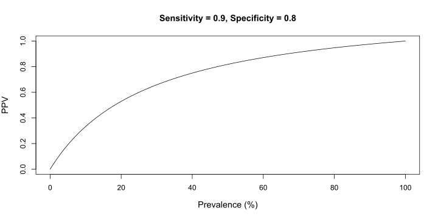Youden’s J, disclaimer
The Youden’s J is just an option among several alternatives for choosing the best threshold. For example the cutpointr package:
An example…
Let’s imagine to have a group of patients with a certain disease (called \(S\)) or condition measured by a gold-standard test. We are developing a new faster and cheaper test (called \(T\)) but we are not sure about the capacity to reliably detect the condition.
state test
1 healthy 0.091
2 healthy 0.566
3 healthy -1.642
4 healthy -0.841
5 ... ...
6 sick 1.503
7 sick 0.78
8 sick -0.445
9 sick 0.829Binary classifiers
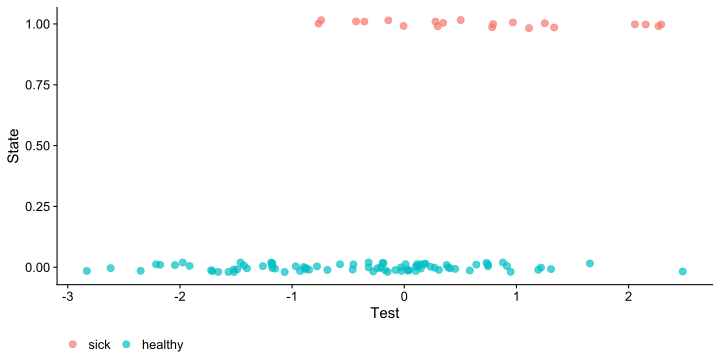
Probably the most intuitive way is the density plot for each group:
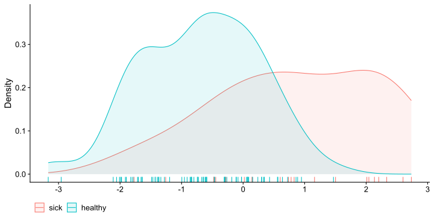
Binary classifiers
Intuitively, as the mean difference (on the predictor) between the two groups increase the two groups are easy to discriminate:
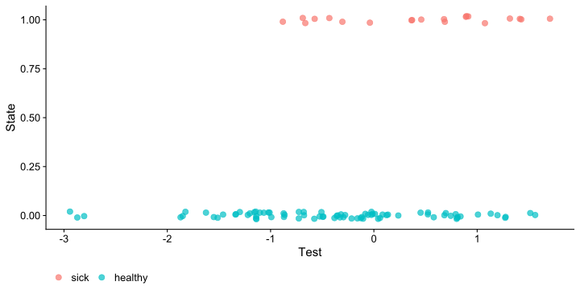Binary classifiers, Thresholds
To create a contingency table and calculate the related metrics we need to choose a threshold on the predictor variable:
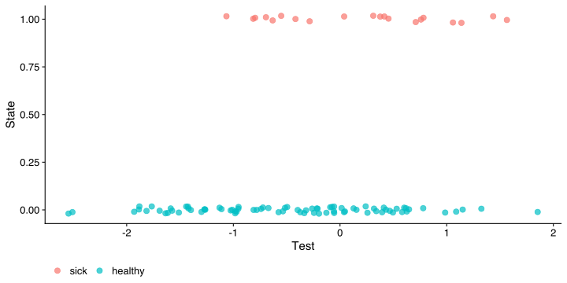
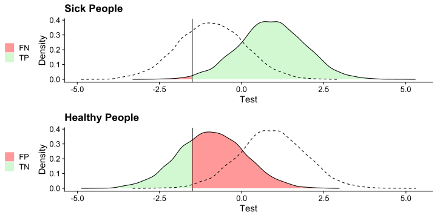
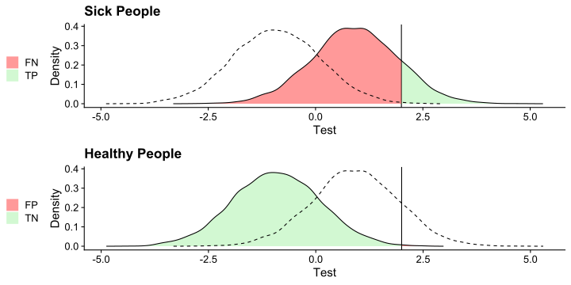
Binary classifiers, Thresholds
Similarly, we can create the contingency tables with related metrics:
Truth
|
||||
|---|---|---|---|---|
| 1 | 0 | Tot | ||
| Test | 1 | 4099 | 935 | 5034 |
| 0 | 901 | 4065 | 4966 | |
| Tot | 5000 | 5000 | 10000 | |
| Threshold = 0 | ||||
| Sensitivity = 0.820 | ||||
| Specificity = 0.813 | ||||
| PPV = 0.814 | ||||
Truth
|
||||
|---|---|---|---|---|
| 1 | 0 | Tot | ||
| Test | 1 | 4963 | 3637 | 8600 |
| 0 | 37 | 1363 | 1400 | |
| Tot | 5000 | 5000 | 10000 | |
| Threshold = -1.5 | ||||
| Sensitivity = 0.993 | ||||
| Specificity = 0.273 | ||||
| PPV = 0.577 | ||||
Truth
|
||||
|---|---|---|---|---|
| 1 | 0 | Tot | ||
| Test | 1 | 665 | 9 | 674 |
| 0 | 4335 | 4991 | 9326 | |
| Tot | 5000 | 5000 | 10000 | |
| Threshold = 2 | ||||
| Sensitivity = 0.133 | ||||
| Specificity = 0.998 | ||||
| PPV = 0.987 | ||||
ROC
We can start by plotting the specificity and sensitivity for a given threshold:
tp fp tn fn tpr fpr tnr fnr tot prevalence c ppv
1 4099 935 4065 901 0.8198 0.187 0.813 0.1802 10000 0.5 0 0.814263
npv
1 0.8185663
ROC
When evaluating sensitivity and specificity with multiple thresholds we obtain the ROC curve:
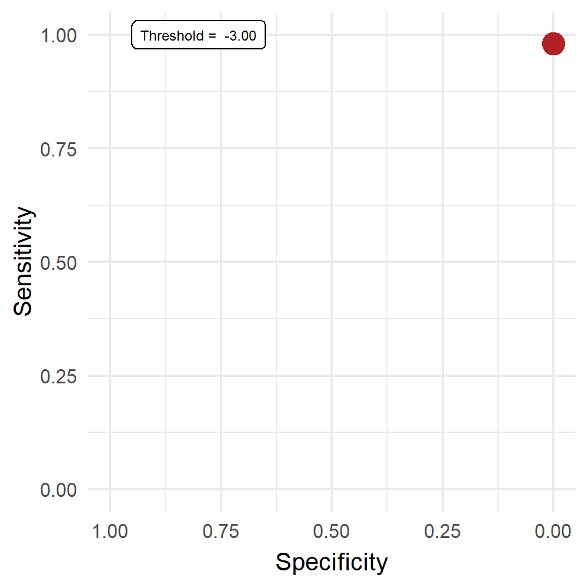
ROC
The Area Under the Curve (AUC) range between 0.5 (null classification) and 1 (perfect classification):
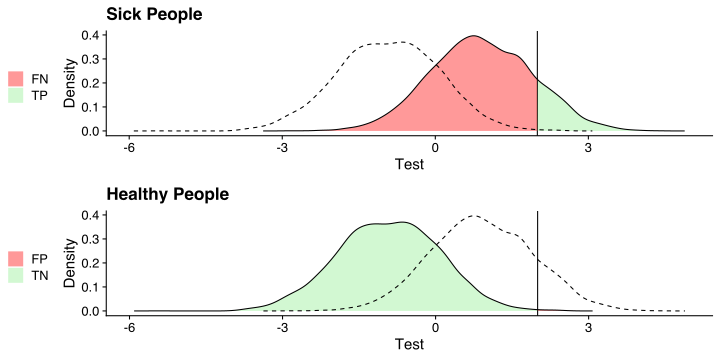Youden’s J
Given the trade-off between sensitivity and specificity, the choice of the best threshold (\(c\)) is not straightforward. An option is using the Youden’s J:
\[ J = sensitivity + specificity - 1 \] Thus taking the maximum of \(J_i\) calculated on all threshold give us the threshold that maximize the sum between sensitivity and specificity.
Youden’s J
Code
par(mfrow = c(1,2))
plot(fit_roc, main = "ROC curve")
points(x = J$specificity, y = J$sensitivity, pch = 19, col = "firebrick", cex = 1.4)
plot(fit_roc$thresholds, Js, type = "l", xlab = "Thresholds", ylab = "Youden's J",
main = "Youden's J")
points(J$threshold, max(Js), pch = 19, col = "firebrick", cex = 1.4)
text(x = 0.6, y = 0.45, labels = sprintf("Cutoff = %.2f", J$threshold))Data simulation
All the example so far are based on simulated data. I wrote a little function (sim_bin_class()) that simulate a binary classifier assuming a latent probit model. You can play around to check what happens changing the parameters.
sim_bin_class <- function(auc = NULL,
d = NULL,
n,
prevalence,
x.mean = 0,
x.sd = 1,
var.names = c(x = "x", y = "y")){
if(is.null(auc) & is.null(d)){
stop("AUC or d need to be specified")
}
if(is.null(d)){
d <- auc_to_d(auc)
}
n1 <- ceiling(n * prevalence)
n0 <- n - n1
y <- rep(c(0, 1), c(n0, n1))
x <- ifelse(y == 1, rnorm(n1, (d/2)*x.sd + x.mean, 1), rnorm(n0, (-d/2)*x.sd + x.mean, 1))
dat <- data.frame(y, x)
names(dat) <- var.names[names(dat)]
return(dat)
}Data simulation
Let’s make an example simulating a binary classifier with an AUC of 0.7:
Data simulation
Let’s see some useful descriptive plots:
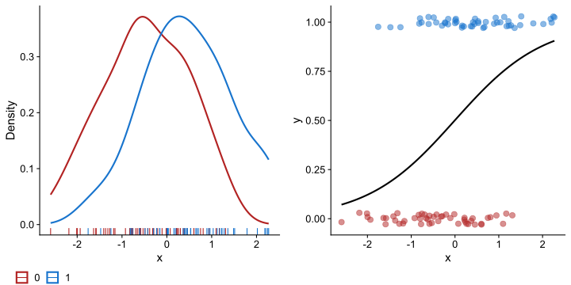Data simulation
The plot_class() function is a shortcut to produce the dotplot-density combination that is useful when plotting a binary classifier:
plot_class <- function(data, y, x){
x <- deparse(substitute(x))
y <- deparse(substitute(y))
if(!is.numeric(data[[y]])) stop("The response variable need to be numeric (0-1)")
dens <- tapply(data[[x]], data[[y]], density)
ndens <- names(dens)
fit <- glm(y ~ x, data = data, family = binomial(link = "logit"))
def.par = par(no.readonly = TRUE)
xlim <- c(min(sapply(dens, function(x) min(x$x))),
max(sapply(dens, function(x) max(x$x))))
ylim <- c(0, max(sapply(dens, function(x) max(x$y))))
par(mfrow = c(1, 2))
plot(dens[[1]],
main = "Density Plot",
xlab = x,
col = "firebrick",
lwd = 1.5,
xlim = xlim,
ylim = ylim)
rug(data[[x]][data[[y]] == ndens[1]], col = "firebrick", lwd = 1.5)
rug(data[[x]][data[[y]] == ndens[2]], col = "dodgerblue3", lwd = 1.5)
lines(dens[[2]], col = "dodgerblue3", lwd = 1.5)
xr <- seq(min(data[[x]]), max(data[[x]]), length.out = 500)
pdata <- data.frame(xr)
names(pdata) <- x
pr <- predict(fit, newdata = pdata, type = "response")
y_jitt <- jitter(data[[y]], 0.2)
y_col <- ifelse(data[[y]] == ndens[1], "firebrick", "dodgerblue3")
plot(data[[x]], y_jitt,
col = scales::alpha(y_col, 0.4),
pch = 19,
main = "Dotplot",
xlab = x,
ylab = y)
lines(pdata[[1]], pr)
par(def.par)
}Data Simulation
Call:
roc.formula(formula = y ~ x, data = dat)
Data: x in 50 controls (y 0) < 50 cases (y 1).
Area under the curve: 0.742Data Simulation
Or manually using the classify() function that compute common classification metrics given one or more thresholds \(c_i\):
classify <- function(data, y, x, c, na.rm = FALSE){
xn <- deparse(substitute(x))
yn <- deparse(substitute(y))
if(na.rm){
data <- data[complete.cases(data[, c(xn, yn)]), ]
}
confusion <- lapply(c, function(cr){
# classify based on c
yp <- ifelse(data[[xn]] >= cr, 1, 0)
out <- data.frame(
tp = sum(data[[yn]] == 1 & yp == 1),
fp = sum(data[[yn]] == 0 & yp == 1),
tn = sum(data[[yn]] == 0 & yp == 0),
fn = sum(data[[yn]] == 1 & yp == 0)
)
# rates
out$tpr <- with(out, tp / (tp + fn))
out$fpr <- with(out, fp / (fp + tn))
out$tnr <- 1 - out$fpr
out$fnr <- 1 - out$tpr
out$tot <- nrow(data)
out$prevalence <- mean(data[[yn]] == 1)
out$c <- cr
out$ppv <- with(out, tp / (tp + fp))
out$npv <- with(out, tn / (tn + fn))
out
})
do.call(rbind, confusion)
}Data Simulation
tp fp tn fn tpr fpr tnr fnr tot prevalence c ppv npv
1 35 17 33 15 0.7 0.34 0.66 0.3 100 0.5 0 0.6730769 0.6875 tp fp tn fn tpr fpr tnr fnr tot prevalence c ppv npv
1 47 36 14 3 0.94 0.72 0.28 0.06 100 0.5 -1 0.5662651 0.8235294
2 35 17 33 15 0.70 0.34 0.66 0.30 100 0.5 0 0.6730769 0.6875000
3 15 3 47 35 0.30 0.06 0.94 0.70 100 0.5 1 0.8333333 0.5731707 tp fp tn fn tpr fpr tnr fnr tot prevalence c ppv npv
12 50 50 0 0 1.00 1.00 0.00 0.00 100 0.5 -3.0 0.5000000 NaN
18 50 49 1 0 1.00 0.98 0.02 0.00 100 0.5 -2.4 0.5050505 1.0000000
25 49 45 5 1 0.98 0.90 0.10 0.02 100 0.5 -1.7 0.5212766 0.8333333
27 49 42 8 1 0.98 0.84 0.16 0.02 100 0.5 -1.5 0.5384615 0.8888889
43 31 16 34 19 0.62 0.32 0.68 0.38 100 0.5 0.1 0.6595745 0.6415094
46 26 10 40 24 0.52 0.20 0.80 0.48 100 0.5 0.4 0.7222222 0.6250000
54 12 1 49 38 0.24 0.02 0.98 0.76 100 0.5 1.2 0.9230769 0.5632184
56 8 0 50 42 0.16 0.00 1.00 0.84 100 0.5 1.4 1.0000000 0.5434783
64 3 0 50 47 0.06 0.00 1.00 0.94 100 0.5 2.2 1.0000000 0.5154639
80 0 0 50 50 0.00 0.00 1.00 1.00 100 0.5 3.8 NaN 0.5000000Data Simulation
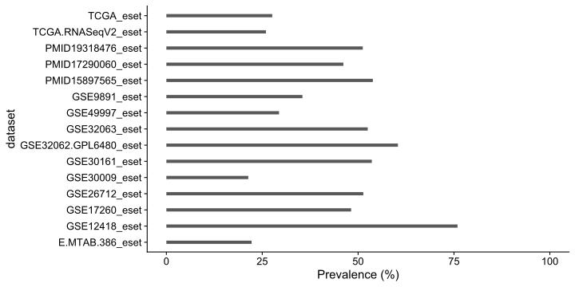Application to genetic data
Objectives
Moving to our curatedOvarianData dataset, we want to explore how the information from genes (\(g\)) expression predict the debulking probability.
The term debulking represent the patient’s surgery success in removing the tumor mass (optimal debulking) vs the insuccess in removing the tumor mass (suboptimal debulking)
Some questions are:
- how different genes predict the debulking status
- how results from a given gene \(g_i\) change, using a different dataset
Conventions and notation
We saw that working with contingency tables requires giving labels to the actual data. In this case we set the following conventions:
- the suboptimal state is coded as 0 i.e. having the disease
- the optimal state is coded as 1 i.e. not having the disease
- higher values of gene expressions (\(x_{g_i}\)) are associated with higher probability of suboptimal state
- we call the state (S) the variable representing the TRUE surgery outcome and test (T) the predicted outcome using the gene expression. Thus e.g. \(p(T_1|S_1)\) is the Sensitivity
Steps
- Load and explore the data (you can the
ovarianclean.rdsor using the rawcuratedOvarianData) - Calculate the prevalence (\(p(S_1)\)) of the optimal debulking for each dataset
- Choose a gene (\(g_i\)) and plot the \(x_i\) values according to the debulking
- Calculate the Sensitivity, Specificity, Youden’s J and PPV for all datasets based on the same gene.
- Compare graphically and descriptively the results
- Calculate the standard error of the AUC (see the
pROC::var()function) - Compute and represent a random-effects meta-analysis polling the AUC for the same gene, across datasets. Interpret the pooled effect, heterogeneity and Q-statistics.
Steps (optional)
- [Extra] Try to compute the standard error of the AUC using a bootstrapping approach. Essentially you need to sample with replacement (see
sample()) \(n\) rows from the dataset (where \(n\) is the total number of rows), compute and store the AUC, repeat the process several times (at least 10000 times), calculate the standard deviation of the boostrapped AUC distribution.
- There is also the
pROC::ci.auc()function with thebootstrapoption. Try to manually code the bootstrap and eventually compare the results - The confidence interval can be calculated with the
quantile()function (see Carpenter & Bithell, 2000) with the desired coverage (e.g., 95%) - Further details are available here https://cran.r-project.org/web/packages/pROC/pROC.pdf (page 5, Section Bootstrap)